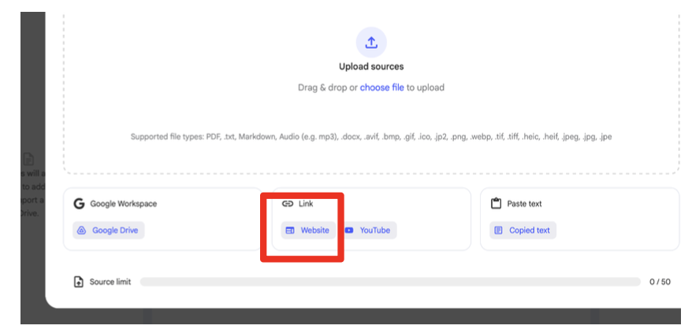
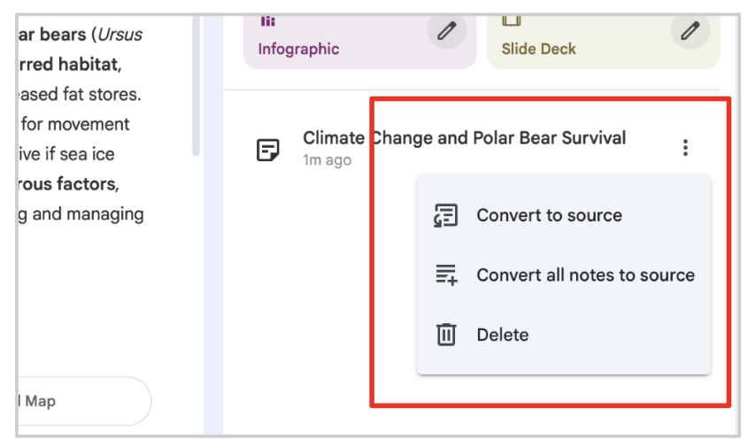
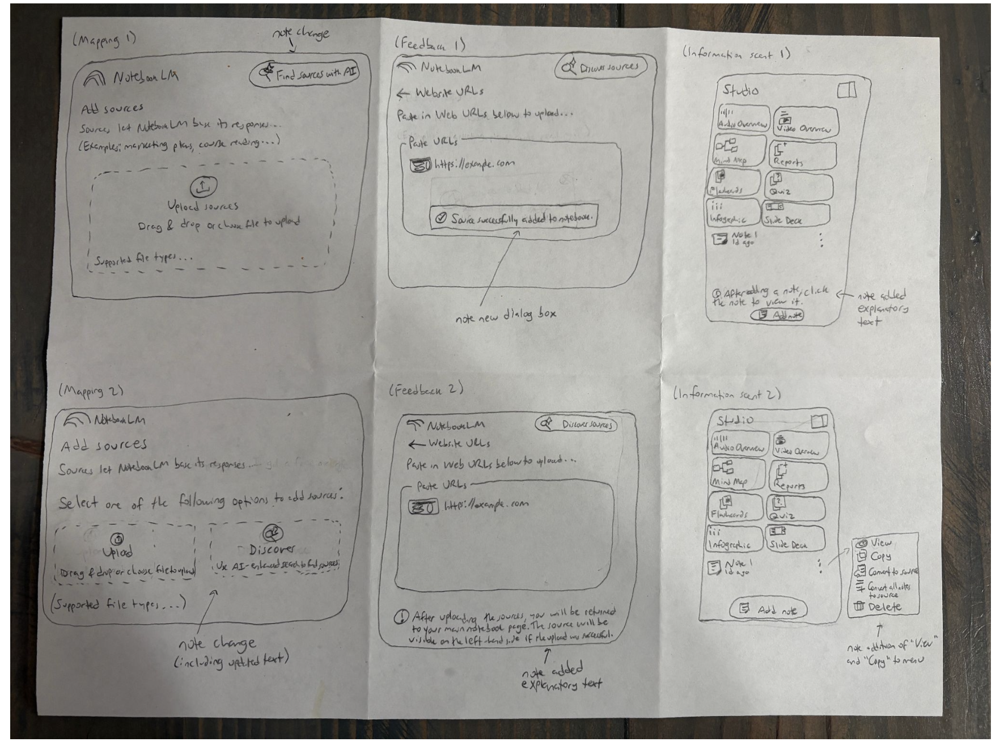
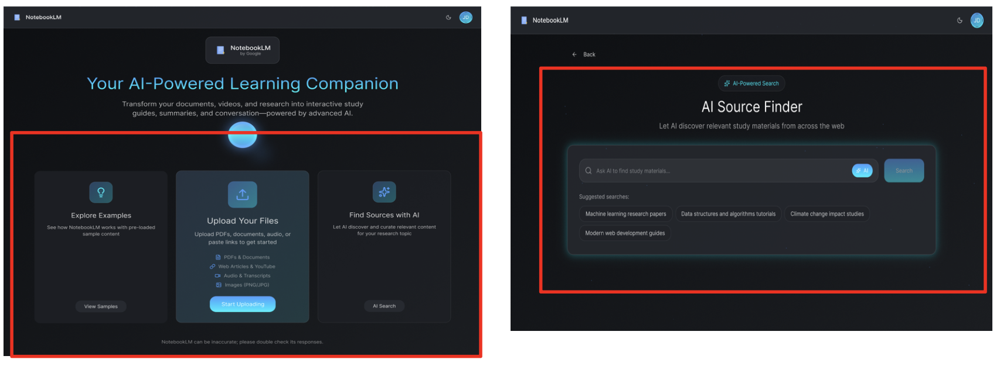
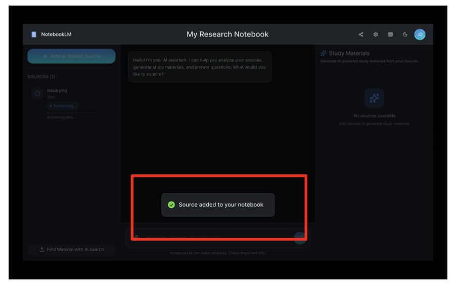
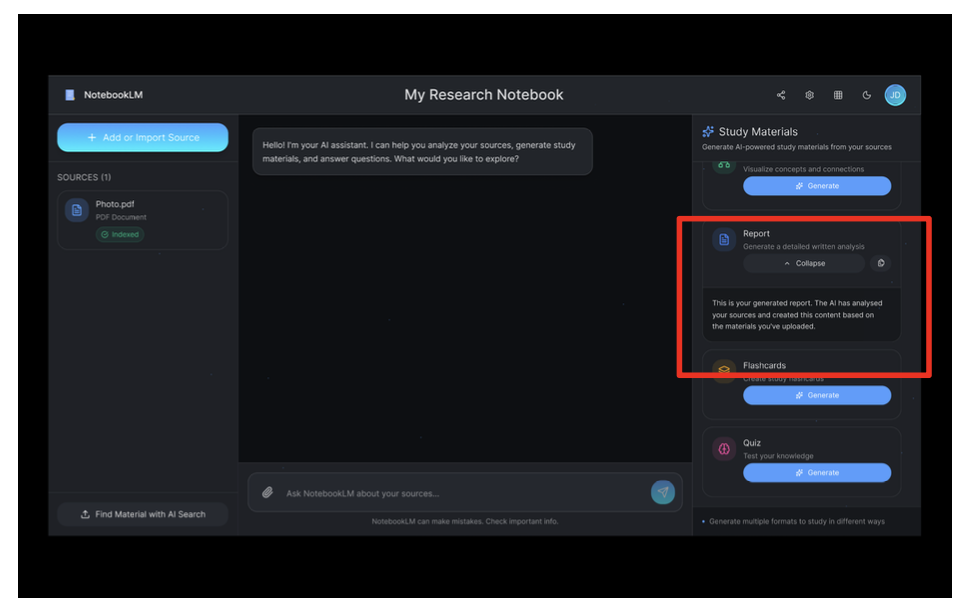

This assignment focuses on improving the interface of NotebookLM, a service provided by Google. The redesign process began on November 17, 2025, and ended on November 30, 2025.
Link to phase 1 prototypePhase 1 of the design sprint began with the group identifying our target user group: HCC graduate students who are beginners with NotebookLM.
The group next defined the following problem statement.
Our target users employ NotebookLM to organize, summarize, and create study materials out of PDFs and other documents. However, in its current form, NotebookLM provides mapping, feedback, and information scent that can all be improved, detailed as follows.
These flaws in turn prevent these users from experiencing a smooth, efficient, and predictable process by which they are able to upload sources, create summaries, and monitor output without any ambiguity or confusion. We propose redesigning the system so that it clearly explains to users what they are doing (mapping), provides clear and timely evidence of successful transactions (feedback), and provides users with meaningful cues to follow up on other actions (information scent). By focusing on these specific design concepts, we aim to improve the user experience in NotebookLM and ensure that it can adequately support HCC graduate students.
The specific problems are explored in greater detail in the following sections.
A mapping tells the user of a web page or app what is going to happen (or should happen, anyway) when the user interacts with an object on the page or in the app. For example, a good mapping might include the text “(opens in new tab)” next to a link or icon to indicate to the user that their current browser tab will not be impacted by clicking the link or icon.
The NotebookLM website includes a mapping issue: the label and placement of the “Discover Sources” button lead users to expect guidance or examples of source documents—but clicking the button instead launches an unrelated AI search interface.
The label and placement of the “Discover Sources” button on the NotebookLM website lead to confusion: given the context of the interface (uploading sources), the user can reasonably expect that clicking this button will display a list of examples, a library of source types, sample documents, or perhaps a help page. Instead, however, clicking the button opens an AI chat/search interface with no visual cue that it is something entirely different.
A good mapping would appropriately inform the user of the change that they should expect upon clicking the button (or otherwise interacting with an element on the page). Indeed, the wording of the button leads users to form a mental model of “discovering”—or browsing—existing sources. The actual outcome of initiating an AI search goes against this model, demonstrating that the system’s mapping does not align with the user’s interpretation of the label.
Our group believes that users can be reasonably expected to raise concerns such as the following.
Feedback refers to an application or website providing confirmation to the user that the user’s action (such as clicking a button or pressing a key) was registered. Feedback also informs the user of the current state of the system—for example, a horizontal bar that gradually fills in can provide the user feedback that the system is processing the file that the user just uploaded. Feedback can be provided in various forms, including audible, visual, and haptic.
The NotebookLM website includes poor feedback. The system does not provide clear confirmation, a clear indication or system status, or traceability after user actions are performed. After the user performs an action—such as uploading a file or generating an output—the interface does not respond in a way that makes the result clearly visible or predictable. This creates uncertainty about whether the action was successful, where the result can be found, and what the system is doing—all hallmarks of poor feedback.
As evidence, consider the following potential user interactions with NotebookLM.
Our group believes that users can be reasonably expected to raise concerns such as the following.
Given that NotebookLM uses generative AI, we would like to flag one particular potential consequence of this lack of feedback. While we (like everyone else) cannot see inside the LLM’s decision process, we do know that LLMs are based on probabilities at their core—the more something comes up in a training data set, the more likely the LLM will provide it as output. Consider now the case of a graduate student who is uploading a pair of articles to NotebookLM—one of which includes a hypothesis that, say, the Sun and the planets revolve around Earth, and the other of which uses new evidence to demonstrate that Earth (and the other planets) revolve around the Sun. The user uploads the first paper but does not receive confirmation that the upload was successful, so they upload the paper again…and again…and again, finally investigating further and realizing that every upload was successful—the site just didn’t indicate that. Now understanding that NotebookLM won’t say the upload was successful, the user uploads the second paper once.
On the assumption that NotebookLM uses uploaded sources as training data, the initial (and debunked) paper will be overrepresented in the dataset. This could in turn lead NotebookLM to create a summary that states, “Much of the available scientific evidence indicates that the Sun revolves around Earth, although there is not universal agreement among scholars.” While our hypothetical user is hopefully not living in the 16th century—and so knows that Earth revolves around the Sun—this illustrates that something as seemingly minor as poor feedback can end up having significant (and very unfortunate) consequences for the user.
The information scent of a site refers to how clear the site’s navigation is for the user. This is often measured by flailing—does the user get to a page and ask themselves, “OK, now what am I supposed to do?”—or low user confidence, either before a click (“Will this link take me where I want to go?”) or after it (“Did I click the right link? This page doesn’t make it clear”).
Our primary concern here is the lack of an indication of what the user is supposed to do after NotebookLM generates a report. Upon generating a report, the user is provided with feedback that the report has been generated but no indication of what they should do to take actions other than renaming and deleting the report. In order to do anything else with the report, the user must click on it—but this is not immediately apparent, and there is no indication of this on the page; that is, the page does not signal to the user what the next step should be.
Our group believes that users can reasonably be expected to raise concerns such as the following.
This is indicative of a poor information scent because of the lack of a signal/beacon on the page indicating the information that the user wants (i.e., how to access the content of the generated report). In turn, this leads to low confidence for the user, whether perceived as being after the click (to generate the report in the first place) or before it (as in the not-obvious click on the report itself). The page neither provides direct instructions to the user nor uses the surrounding UI elements to provide context clues, resulting in low user confidence that indicates a poor scent.
The group first identified the target user base; the group of “beginning users” was chosen specifically because these users would be most impacted—and so arguably most likely to notice—these issues. The group felt that more experienced users would have developed—and likely internalized—workarounds to address these issues, making such users less likely to notice (and comment on) the issues.
Our group consisted of two students who are moderate users of NotebookLM and one student who is a beginner. To complete this stage, the group had its beginner member attempt to upload a source and create a summary in NotebookLM; this member made note of the issues and uncertainties that he encountered as part of the process. The group afterward worked together to map these concerns to design concepts and to come up with the questions or comments that other beginning users might raise about the identified issues.
Each group member was asked to complete two sketches to solve the issues previously identified. As the focus is on my contributions to the project, only my sketches (and explanations) are included.
Sketch 1: This changes the wording of the “Discover Sources” button to “Find Sources with AI,” providing a more accurate description of what functionality clicking the button will enable. This solves the mapping issue by making it clear what the user can expect upon clicking the button.
Sketch 2: This adds a “Discover” field next to the “Upload” field and briefly describes what this actually does (i.e., launches an AI-enabled search). This similarly solves the mapping issue by explicitly informing the user what the “Discover Sources” function (shortened to “Discover”) actually does.
Feedback:Sketch 1: This adds a banner with a check mark that reads “Source successfully added to notebook” upon the successful completion of the addition of a website. This solves the feedback issue by clearly and unmistakably telling the user that their operation was successful. A slightly modified version of this was used in the actual prototype.
Sketch 2: Upon pasting in at least one URL, explanatory text appears at the bottom of the page that tells the user what happens next and what to expect if the operation is successful. While this is arguably trending more into the territory of information scent, the fact that this explanatory text only appears after the user has pasted in a URL—and intentionally describes the current state of the system—allows it to solve the feedback issue specifically.
Information Scent:Sketch 1: This adds explanatory text at the bottom of the “Studio” portion of the page that tells the user what to do after adding a note. This solves the information scent issue by providing the user a clear indication of what to do next, significantly reducing flailing on this page and providing more clear direction to the user.
Sketch 2: This adds “View” and “Copy” options to the three-dot menu on the right side of each added note. As users are likely to click the three dots (if for no reason other than familiarity with such menus from other websites they have visited) if they are unsure what else to do, this solves the information scent issue by providing a more clear path forward (and more clear next steps) for the user by including the two operations they are most likely to want to do (of the available operations).
As stated earlier, our group included two individuals who have fairly extensive knowledge of NotebookLM and one with significantly more limited experience using the app. As such, we aimed to create a solution that reflected each individual’s unique background and perspective to create a solution that is viable for users of all skill and experience levels. Our planned redesign facilitates the use of NotebookLM by master’s and PhD students, novices and experts, and students at all stages of the research process.
The selected solutions were chosen due to their broad applicability across this anticipated user base. For this stage, our group engaged in extensive internal discussions (modeled after tabletop exercises used for organizational contingency planning) consisting of proposed “what-if” use scenarios, a “walkthrough” of the each design with a rotating team member standing in for the proposed user, and a debriefing afterward to discuss the benefits and drawbacks of the specific designs. While these were necessarily conducted on a smaller scale—and in a shorter time frame—than an organization-wide tabletop exercise, we felt this model was instructive in the design context as well, as we felt that the inclusion of a “debriefing” component would allow for more structured and thoughtful discussions and that having a “prospective user” run through a use case would give us a more accurate depiction of what an actual user might encounter than merely talking about these ideas. Following these debriefs, the group chose the option where the “user” had the best experience—both in terms of specifically providing positive feedback and in terms of asking the fewest questions and getting stuck less.
MappingTo address the mapping issue, we have redesigned the landing page to specifically call out the AI-powered research—which now includes the descriptor “Find Sources with AI” and whose button has been changed from “Discover Sources” to “AI Search” to more accurately reflect what this function allows the user to do. Although minor, this change can significantly enhance the experience for our target users—who lack in-depth familiarity with the app and its functions and are likely to be pressed for time when they use the app.
Indeed, the users now know exactly what they are getting. Originally, a user could interpret the “Discover Sources” button as something that would help them with the heavy lifting—going through conference proceedings and paper databases to find relevant articles—and would end up disappointed upon learning that it is in fact just an AI-powered search. With our changes, the user knows up front what the button does and can adjust their use of the platform accordingly.
Much of our redesign focuses on ensuring that the site provides adequate feedback to users. In the redesigned site, when the user uploads a source, the site now displays a popup window confirming that the source was successfully added —resolving the issue of lack of displayed confirmation described earlier. In addition, when the user is using NotebookLM to generate a summary of one or more sources, the relevant source(s) are now displayed (and easy to see) on the left side of the page—and each also includes an indicator of its status, such as “Extracting text” or “Indexed.”
This represents a significant improvement over the previous design, as it now provides clear indications of whether the user’s action succeeded and, if so, what NotebookLM is now doing to complete the user’s request. Moreover, this solves the problem we outlined earlier of users unintentionally making the dataset unreliable by repeating the same action in response to the lack of feedback. Thus, in addition to improving the user experience, these design changes also ensure that NotebookLM will achieve its primary purpose of generating study materials for users without providing inaccurate information due to users’ (unintentional) actions.
Our efforts to address the problems with information scent revolved around ensuring the user knows what to do once their report has been generated. Notably, NotebookLM only allows the ability to copy the text of a report; users cannot actually download it (as, say, a PDF)—an omission that will likely frustrate many users but whose addition is beyond the scope of this assignment. With this in mind, we made the copying function more prominent by adding the universal “copy” symbol to the “Report” section of the right sidebar. This portion of the sidebar also now includes a message informing the user that the report has been generated based on the sources that the user previously uploaded.
Again, our goal here is not to introduce new functions that the user would benefit from but to ensure that the website’s design most appropriately cues and informs the user regarding the existing functions. Our focus on copying the report may seem misplaced, but in light of the absence of a “Download” function, this is the most logical next step for the user. The redesign thus significantly improves on the original design by adding cues to the available options, increasing a user’s after-click confidence (“yes, this did what I wanted it to do”), and, as a result, minimizing flailing.
Phase 2 of the design sprint process involved seeking feedback from potential users (i.e., classmates) and adjusting the prototype based on their feedback. To protect classmates' privacy, no testers are referred to by name.
We began by defining a task for prospective users to complete using the prototype. This task consisted of three steps: test users were asked to search for a paper, upload the paper and create notes on it, and copy these notes into a new document. This process was based on the specific concepts we addressed in our redesign: mapping, feedback and information scent.
In addition, we defined a quantitative usability criterion: time to ask completion. We measured time using a stopwatch, starting when the users began their test and stopping upon a user’s completion of the third task. In addition, we intentionally spaced the tests approximately 30 minutes apart so that users were starting “fresh”; our goal was to limit the extent to which the users’ time to task completion was influenced by their recently having completed the task (and thus having the navigation stored in their immediate short-term memory). Each member of the group tested the prototype and the original site with one user.
As stated earlier, our test users were classmates. Each test user was initially asked the following two questions.
These answers varied depending on the user. After their completion of the task, we asked for feedback, including what they liked and anything they wished to change in the prototype.
As our intended user base is novice users of NotebookLM, all test users were asked to run through the prototype site first to more appropriately simulate the experience of a first-time or beginning user.
The entire user-testing process proceeded as follows.
The feedback received from our testers is summarized in the following paragraphs.
Tester 1After gathering feedback from test users, the group updated the prototype based on these users' thoughts. The following table below highlights the key differences between our first and second prototypes, showing the improvements made after getting feedback from the test users.
| Aspect | Previous Version | Improved Version (After Feedback) |
|---|---|---|
| Homepage scroll | The long scroll on the homepage made the layout look cluttered. | Reduced scrolling by resizing layout elements to fit more content on screen. |
| Feature buttons activation | Only the "Report" button was active; other features like Mind Map and Flashcards were inactive. | All feature buttons (Report, Flashcards, Mind Map) are now fully active and working. |
| Page navigation | Users had to go back to the starting point to access new features. | Users can now jump between any pages directly and can also add sources in between. |
| Fitts's Law issues | Some clickable elements were small or placed far away. | Adjusted sizing and placement to follow Fitts’s law. |
| Feedback on actions | No feedback messages for actions like “Copy.” | Added feedback messages for clarity and confirmation. |
| Feedback delays | Confusion among users where to click after the feedback. | Added after delay in between screens so that users are not confused where to click on screen. |
| Visual design | Colors, typography, and layout were already good. | Kept as it is with small links, minor fixing and flow adjustments. |
Our team used mostly Google Meet (to meet online) and WhatsApp (to talk through text). We had a few in-person meetings, and we used Google Docs to complete the written part of the assignment—while working on the paper, we left comments and suggestions for each other.
Throughout the project, the group collaborated on most parts of the paper to bring together both sprints. In phase 1, group member 1 designed the new NotebookLM interface look and implemented the redesigned concepts into the site. I wrote and refined the main text/language of the paper. Group member 3 supported group member 1 by touching up typography in the prototype design and assisted me by gathering images, writing descriptions, and organizing references. Each of us also contributed individually through sketches and written explanations in the relevant sections.
In phase 2, both the redesign of the site and contributions to the written document were managed as a group. All group members contributed to this document, and decisions about revisions to the prototype were made collaboratively so that we could consider and integrate the feedback from each group member’s chosen tester.
Our use of collaborative technologies was crucial to our success with the project. We additionally found that in-person meetings were best for completing the actual design process, so most of our sessions on Google Meet focused on administrative tasks such as dividing up work. I feel we were successful in coming up with a division of work (described in the following paragraphs) that maximized each group member’s contributions by targeting specific tasks to their strengths. In terms of our collaboration process, there is nothing that immediately comes to mind that we would do differently next time due to the success of our process with this project.